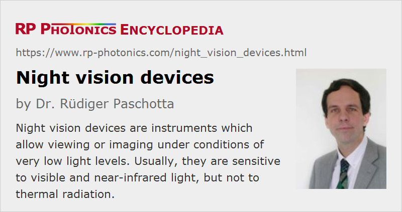

Night Vision Devices
Acronym: VND
Definition: instruments which allow viewing or imaging under conditions of very low light levels
German: Nachtsichtgeräte
Category: light detection and characterization
How to cite the article; suggest additional literature
Author: Dr. Rüdiger Paschotta
Night vision devices are instruments which allow viewing or imaging under conditions of very low light levels. They are generally sensitive to visible and near-infrared light, not in the mid-IR. Therefore, a certain illumination level is required, because near-infrared thermal radiation would become strong enough only at relatively high temperatures. However, the high performance of image intensifiers allows for night vision at very low light levels; while early devices required moon light, it is now sufficient to have faint star light, for example.
It is also in principle possible to obtain night vision by detecting mid-infrared light which objects emit as thermal radiation (→ via thermal imaging). In that case, no illumination at all is required. One can particularly well recognize warm objects. However, that requires expensive infrared cameras.
Since the second world war, night vision devices are extensively used by the military. Therefore, there are various restrictions for the use of such devices outside the military and concerning exports. However, night vision devices are available for various other applications, such as security and hunting.
Operation Principle
The operation principle of a night vision device is essentially based on an image intensifier, having a photocathode which is sensitive to visible and near-infrared light. Photoelectrons trigger an electron multiplication process, which leads to strong amplification of the electronic signal. The electrons then hit a phosphor screen, where they produce a visible image again. In front of the image intensifier, one requires some imaging optics – some objective or telescope.
For more details, see the article on image intensifiers and image converters.
In some cases, night vision devices are used in conjunction with active illumination. This can be invisible infrared radiation. Even an ordinary near-infrared camera, not being particularly sensitive, can be used under apparently dark conditions when combined with some infrared illuminator, for example based on light emitting diodes, and for viewing not too distant objects.
Type of Night Vision Devices
Night vision devices can have different forms:
- Some are provided as hand-held binoculars or monoculars. Compared with ordinary binoculars and monoculars, they are somewhat more heavy and need to be powered with batteries.
- Some devices are made for mounting on weapons, for example on rifles. They are normally equipped with a telescope for viewing distant objects.
- There are devices which are mounted to soldier helmets.
- Others are integrated into vehicles or aircraft, for example.
Suppliers
The RP Photonics Buyer's Guide contains 4 suppliers for night vision devices.
Questions and Comments from Users
Here you can submit questions and comments. As far as they get accepted by the author, they will appear above this paragraph together with the author’s answer. The author will decide on acceptance based on certain criteria. Essentially, the issue must be of sufficiently broad interest.
Please do not enter personal data here; we would otherwise delete it soon. (See also our privacy declaration.) If you wish to receive personal feedback or consultancy from the author, please contact him e.g. via e-mail.
By submitting the information, you give your consent to the potential publication of your inputs on our website according to our rules. (If you later retract your consent, we will delete those inputs.) As your inputs are first reviewed by the author, they may be published with some delay.
See also: image intensifiers and image converters, microchannel plates
and other articles in the category light detection and characterization
|  |
If you like this page, please share the link with your friends and colleagues, e.g. via social media:
These sharing buttons are implemented in a privacy-friendly way!